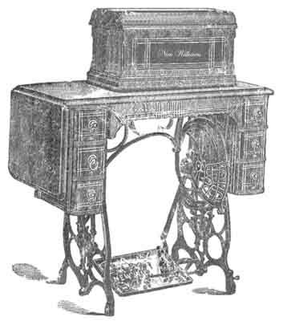
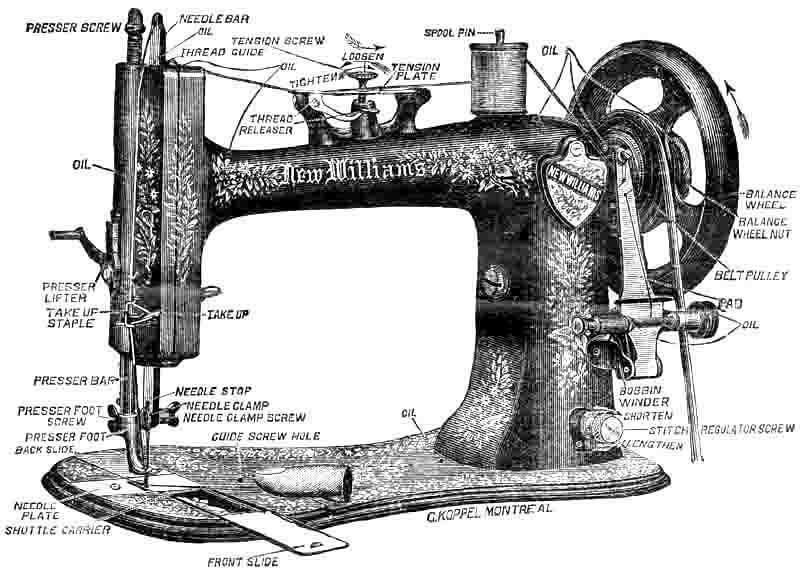
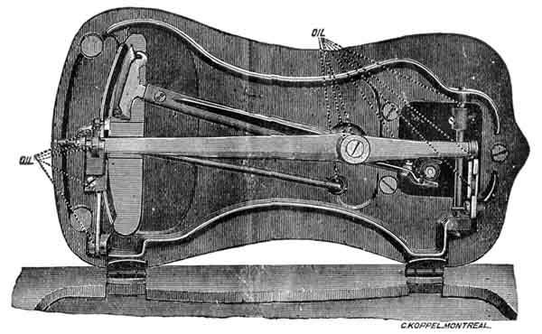
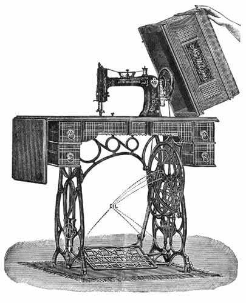

THE NEEDLEBAR
Online Manuals Section
INSTRUCTIONS
FOR USING THE
NEW WILLIAMS

Sewing Machines
INSTRUCTIONS
FOR USING
THE NEW WILLIAMS
SEWING MACHINES
---- and ----
ATTACHMENTS
----:----
MANUFACTURED BY
Williams Manufacturing Company, Ltd.
MONTREAL, CANADA.
----- : -----
Montreal
C. R. CORNEIL PRINT, 60 CRAIG STREET
THE
NEW WILLIAMS
SEWING MACHINE
_______________
THE SEWING MACHINE OF THE PERIOD
______________
|
Is calculated to supply a want long felt by the users of Sewing Machines. It is simple in construction, quiet in motion, easy to run; there is plenty of space under the arm. It is made of the best of material, and finished in the most workmanlike manner, by the most skillful mechanics that money can procure. Agencies established in all the leading cities of the United States, Canada and Europe. If there is no Agent in your locality, write for any information you may require to
|
THE WILLIAMS MANUFACTURING COMPANY, LTD.,
246 ST. LAWRENCE STREET, MONTREAL.
|
CONTENTS
|
|
|
Page
|
|
| Illustration, Upper view of Machine |
4
|
| Illustration, Under view of Machine |
5
|
| List of Accessories |
5
|
| Illustration. Complete Machine |
6
|
| Adjustable Castor |
6
|
| Instructions for using |
7
|
| To Oil the Machine |
7
|
| To Get the Motion |
7
|
| To Thread the Machine |
7
|
| To Remove the Needle |
7
|
| To set the Needle |
8
|
| To Wind a Bobbin |
8
|
| To Thread the Shuttle |
9
|
| To Draw up the Shuttle |
10
|
| To Commence Sewing |
10
|
| To Take Out the Work |
10
|
| To Regulate the Tension |
10
|
| To Turn a Corner |
10
|
| To Alter the Length of Stitch |
10
|
| To Adjust Pressure on work |
11
|
| To Raise or Lower the Feed |
11
|
| To Shorten the Belt |
11
|
| To Select Needles and Thread |
11
|
|
ATTACHMENTS
|
|
| Narrow Hemming - Foot Hemmer |
12
|
| Hemming with Hemmer Set |
14
|
| Braiding |
16
|
| Felling |
16
|
| Tucking |
18
|
| Gathering or Ruffling |
20
|
| Shirring |
20
|
| Quilting |
22
|
| Hemming and Sewing on Lace |
23
|
| Binding |
24
|
|
NOTICES
|
|
| Advice |
18
|
| Hints to Users | 25 & 26 |

This cut is intended for reference, and shows very clearly the direction the wheel should turn, the threading of Machine and Bobbin Winder, and gives the names of all the parts to which reference is made in the instructions. It also indicates the places to be oiled, and shows the manner of drawing up the under thread.

Head of Machine, showing under mechanism and points at which oil must be applied.
ATTACHMENTS AND ACCESSORIES
We furnish free with each New Williams Machine.
| Six Bobbins | One Thumbscrew | One Shirring Blade |
| One Screw Driver | One Foot Hemmer or Feller | One Binder |
| Twelve Needles | Four Plate Hemmers (Set) | One Braider |
| One Guide | One Tucker | One Oil Can |
| One Quilter | One Ruffler | One Thread Cutter |
| One Oil Bottle | ||
|
One small Screw Driver for Shuttle Tension Screw
|
||
The above articles constitute the most valuable and useful outfit furnished with any machine in the Market.

Special attention is called to our PATENT DEVICE FOR AUTOMATICALLY ADJUSTING THE LEGS OF MACHINE to any kind of floor. On the foot of the right front leg, you will notice a small Thumbscrew, which, when loosened, releases the adjustable Castor, which will at once cause all the legs to rest on the floor. Tighten the Screw and the Machine will stand solidly, thus in a very simple manner, obviating the necessity of "WEDGES", "SCREW DRIVERS", etc., being stuck under the leg to level up the Machine; and when moving the Machine to another place, it is only necessary to repeat the loosening and tightening of the Thumbscrew to ensure a solid standing Machine. The dotted lines indicate points where oil is needed.
Part Two | Part Three | Part Four | Part Five